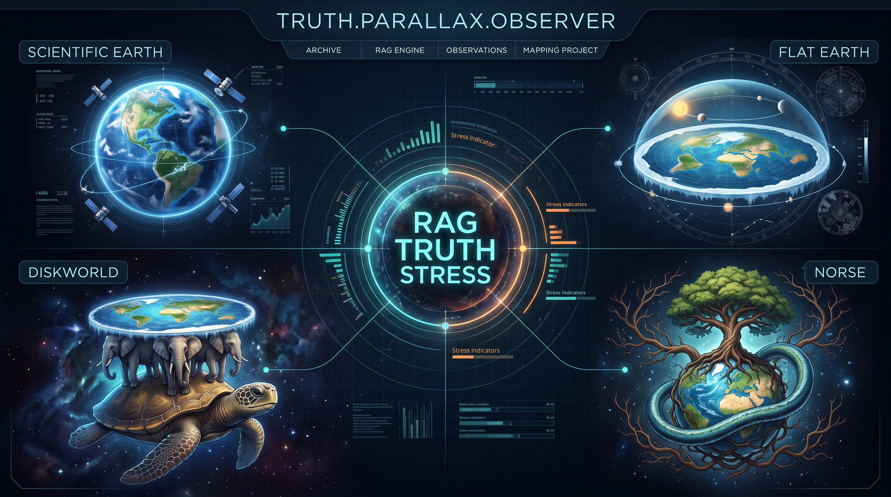
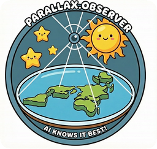

Earthify you! Guaranteed!!!
Parallax is the apparent shift in the position of an object when you move your line of sight. It is the reason the project is called what it is called: the same visitor, shown the same evidence, moves. The lab is four observers at four different lines of sight, and every one of them is convinced they are looking straight at the truth. The RAG engine in the middle is what does the moving: it holds the corpus, and whichever corpus you point it at, it will argue it beautifully.
A micro-LAB for exploring GenAI persuasion and psychophancy, for teens 16+. The agent tries to persuade you about the opposite opinion on the shape of the Earth. You watch the whole thing happen.
Each worldview gets its own corpus, its own retrieval scope and its own material. Nothing is shared between them, so a flat earther can only quote the flat earth material.
| Worldview | What it argues | Where the material comes from | Corpus |
|---|---|---|---|
| Scientific Earth | The geodesy, the experiments, the photographs | The scientific record, the surveys, the satellite geodesy | 1109 + 127 |
| Flat Earth | The Victorian experiments, the scripture, the forums | Rowbotham, the Zetetic Society, the flat earth wikis | 872 + 128 |
| Discworld | The world of the novels, its geography and its physics | The Discworld wikis, the wiki category, the references | 438 + 132 |
| Norse cosmology | The nine worlds, the cosmic tree, the raven | The Prose Edda material, the Wikipedia category, the wiki | 657 + 148 |
The counts are knowledge entries plus ammunition, and they move as the corpus grows. The Norse tier is the whole Poetic Edda in the 1923 Bellows translation, the Discworld tier is the geography and the culture of Ankh-Morpork, and the spherical tier is the four thousand years of people actually measuring the Earth.
Every fact lives in one of two tiers, and the split matters for what the lab can prove.
| Tier | What it holds | How it is made |
|---|---|---|
knowledge |
The source text itself, per worldview | Verbatim from the sources, only the summary is generated |
enrichment |
Catchphrases, quotes, misleading claims | Written from scratch, expanded into three tiers by a model |
The knowledge tier can be cited. The enrichment tier
is ammunition, and it is allowed to be colorful. The fact checker uses the
first, the spokesperson uses the second.
One RTX 4070, twelve gigabytes, no cloud account, no API key.
| Service | Port | What it does |
|---|---|---|
| Chat and embeddings | 11433 | llama.cpp router, granite-4.0-h-tiny and EmbeddingGemma 2 |
| Memory | 1933 | OpenViking context server |
| Observability | 6006 | Phoenix |
| App | 8668 | The terminal style chat UI |
Both models live in a single llama.cpp server that runs in router mode, so the request body decides which one answers. One CUDA context instead of two, which is what makes the card comfortable.
pixi install
docker/fetch-models.sh
docker/up.sh
docker/status.shThen open http://localhost:8668.
The lab instructions live in the repository, one page per experiment.
The full source, the planning documents and the corpus pipelines live in the repository. This site is the readable part of it.